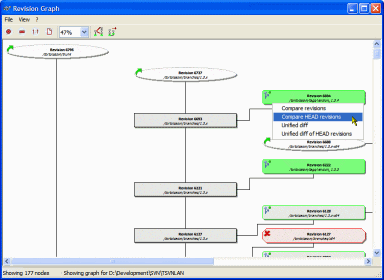
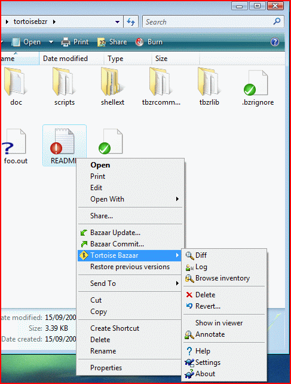

Version Control Systems And Virtual Labs
Table of Contents
1 Version Control Systems In General
Version Control or Revision Control generally refers to management of changes in a document, large collaborative projects. Changes are generally identified by a number called revision number, with the initial version being 1. Each revision has a timestamp associated with it, which keep tracks of when those particular changes were made and by whom. Usually a large number of people happen to be working on same project, some of their versions have bugs and need to be tested before deployment. In such a scenario, it makes sense for some people to help debug some versions and make them fit for deployment. Naturally they would need to access the source codes,modify them and commit them back. Since Virtual labs too , is a large scale collaborative effort, where many lab developers contribute and many more test /debug their labs , it makes perfect sense for Virtual labs to use Version control systems. So , here we need to compare and contrast many available open source version control sytems, some of them being Subversion, Git and Bazaar.
2 Two Broad Categories
Almost all Version Control Systems can be divided into two main categories, Concurrent Version System (CVS) and Distributed Version Control System (DVCS).
A CVS is based on the idea that there is a single central copy , probably on a server , and all the contributers will "commit" their changes to this central copy.
"Committing" a change simply means recording the change in the central system.Other contributers would be able to pull down this change, and probably update the contents of any file.

However, A DVCS is based on idea that its not important to rely on a central server for versions of the project.
Instead every developer "clones" a copy of a repository and has the full history of project on his local machine.This copy (or clone) has all the metadata of the original.
This method may sound wasteful, but in practice, it's not a problem.
Most programming projects consist mostly of plain text files (and maybe a few images), and disk space is so cheap that storing many copies of a file doesn't create a noticable dent in a hard drive's free space.
Modern systems also compress the files to use even less space.

2.1 Advantages Of DVCS Over CVS
- Performing actions other than pushing and pulling changesets is extremely fast because the tool only needs to access the hard drive, not a remote server.
- Committing new changesets can be done locally without anyone else seeing them. Once we have a group of changesets ready, we can push all of them at once.
- Everything but pushing and pulling can be done without an internet connection. So we can work on a plane, and we won't be forced to commit several bugfixes as one big changeset.
- Since each programmer has a full copy of the project repository, they can share changes with one or two other people at a time if they want to get some feedback before showing the changes to everyone.
3 Subversion
Subversion , is a version control system developed by apache and distibuted under open source license, making it useful to virtual labs. It is comparitively an older version control system , and is a Concurrent Versions System (CVS). Subversion is largely network dependent , this also makes it slower , since commits and all such coomands utilise network resources .
3.1 Here are some points in favor of Subversion :
- Subversion is much easier to use, even by non programmers.
This factor is very useful because many of the lab developers are not expected to have such knowledge.
- It is unlikely that we would need to have two branches for a same lab development, so it makes to have sense to have a single central repository.
- Also Subversion has better support for windows , which is good since many lab developers may not be using linux, or may be comfortable with it .

- Subversion supports empty directories as well , since many a times during development process , we have empty directories that get populated later on.
4 Git
Git , again is a version control system , that happens to be a DVCS . Written by linus for linux kernel development , this software was released and licensed under GNU general public license v2 , making it again useful to virtual labs.
4.1 Here are some points in favor of Git :
- Git , being distributed version control system , tends to be faster and poses lesser network overhead due to many requests being handled by it on the local machine itself. Almost all the requests except the ones which need to connect to the server like pushing back or pulling down a copy , take place on local machine.
- Git is better for multiple branch development , suppose a scenario in which a single lab is being developed by two groups from the very beginning.
- The best part about git is that it uses SHA-1 checksum , that ensures better data integrity, also it has ,in general a better history integrity as well , since no change can be made to a previous version without it being noticed.
- Git has largest user base, which makes its documentation and other online guides available in larger proportion to other version control systems.Lab developers would have better support in its case.
- Git also has better architecture in some sense . Most of the version control systems , think of their data as an original version and all subsequent versions are stored as some changes to that original version.

However git stores each version independent of the previous version.
This makes it faster , since if we demand , say version 4, then other version control systems would try to apply changes on the base version and return it, which obviously takes more time .

5 Bazaar
Bazaar is yet another version control system , based on principles of a DVCS. Licensed under GPLv2 ,its also usable for virtual labs. Bazaar also has a large user base, making it an option to be considered , and equally potent as git , only having some minor changes. Bazaar is , but complex to use , and also is slower than git.
5.1 Here are some points in favor of Bazaar :
- Bazaar is also DVCS , so it has some of the benefits , same as git.
- Bazaar also has better windows support, like svn , giving it an edge over git.

- It also allows empty directories to be versioned , as in svn and unlike git. During lab development , some of the developers might want to leave some directories to be populated by other developers.
6 Conclusion
In my opinion , we must implement and provide support to the lab developers by giving them option to work in whichever version control systems they want to use. As of now, I am aware of redmine being integrated with Svn through plugin called svnadmin.Similar work needs to be done with git and bazaar.
Date: 2012-06-20 11:03:33 IST
HTML generated by org-mode 6.33x in emacs 23